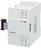
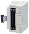
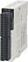
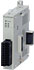

MELSEC-F series High-Speed Counting

Using high speed counters, high speed signals from encoder ans sensors can be counted.
Because FX PLC has built-in high performance high speed counters, high speed control is possible with a simple program. A high speed counter block with hardware comparator is also available.
High speed counter block/adapter
| Model (Number of channels) |
Type | Highest response frequency |
Hardware comparison output function |
2-phase counter edge count function |
Applicable FX PLC | |||||||||
|---|---|---|---|---|---|---|---|---|---|---|---|---|---|---|
| FX 3S |
FX 3G |
FX 3U |
FX 3GC |
FX 3UC |
||||||||||
| FX2N-1HC (1 ch)  |
1-phase 1-count |
Max. 50 kHz | ○ | - | × | × | ○ Max. 8 units |
× | *2*3 ○ Max. 8 units |
|||||
| 1-phase 2-count |
Max. 50 kHz | |||||||||||||
| 2-phase 2-count |
1 edge count: Max. 50 kHz 2 edge count: Max. 25 kHz 4 edge count: Max. 12.5 kHz |
○ | ||||||||||||
| FX3U-2HC (2 ch)  |
1-phase 1-count |
Max. 200 kHz | ○ | - | × | × | ○ Max. 8 units |
× | *2 ○ Max. 4 units |
|||||
| 1-phase 2-count |
Max. 200 kHz | |||||||||||||
| 2-phase 2-count |
1 edge count: Max. 200 kHz 2 edge count: Max. 100 kHz 4 edge count: Max. 50 kHz |
○ | ||||||||||||
| FX2NC-1HC (1 ch)  |
1-phase 1-count |
Max. 50 kHz | ○ | - | × | × | × | × | *3 ○ Max. 8 units |
|||||
| 1-phase 2-count |
Max. 50 kHz | |||||||||||||
| 2-phase 2-count |
1 edge count: Max. 50 kHz 2 edge count: Max. 25 kHz 4 edge count: Max. 12.5 kHz |
○ | ||||||||||||
| FX3U-4HSX-ADP (4 ch)  |
1-phase 1-count |
Max. 200 kHz | × | ○ | × | × | *1 ○ Max. 2 units |
× | × | |||||
| 1-phase 2-count |
Max. 200 kHz | |||||||||||||
| 2-phase 2-count |
1 edge count: Max. 100 kHz 4 edge count: Max. 100 kHz |
|||||||||||||
- *1When used together with analog or communication adapters, function expansion board is required.
- *2When connecting to FX3UC, FX2NC-CNV-IF or FX3UC-1PS-5V is required.
- *3FX3UC-32MT-LT(-2): 7 units. FX3UC-**MT/D, FX3UC-**MT/DSS, FX3UC-16MR/D(S)-T: 8 units.
Built-in high speed counter function (high speed input adapter function)
FX3S Series PLC
| Type | Counter No. Highest response frequency* |
Max. response frequency when high speed processing instruction is used* |
Supported high speed processing instructions | High speed counter move |
2 phase counter multi- count function |
FX3U-4HSX-ADP max. response frequency (FX3U only) |
|||||
|---|---|---|---|---|---|---|---|---|---|---|---|
| When high speed comparison SET/RESET is used |
When high speed band comparison HSZ is used |
High speed comparison SET |
High speed comparison RESET |
High speed band comparison |
Counter interrupt |
High speed table comparison |
|||||
| 1- phase 1- count |
C235, C236, C241 Max. 2 pts： Max. 60 kHz |
overall frequency 60 kHz |
○ | ○ | ○ | × | × | × | - | × | |
| C237 to C240, C242 to C245 Max. 4 pts： Max. 10 kHz |
|||||||||||
| 1- phase 2- count |
C246 Max. 1pt： Max. 60 kHz |
||||||||||
| C247, C248, C248(OP) C249, C250 Max. 2 pts： Max. 10 kHz |
|||||||||||
| 2- phase 2- count |
C251 Max. 1pt： Max. 30 kHz |
× | |||||||||
| C252, C253, C253(OP) C254, C255 Max. 2 pts： Max. 5 kHz |
|||||||||||
- *Regarding high speed counter reponse frequency, the overall frequency is limited. For details, please refer to the programming manual.
FX3G, FX3GC Series PLC
| Type | Counter No. Highest response frequency* |
Max. response frequency when high speed processing instruction is used* |
Supported high speed processing instructions | High speed counter move |
2 phase counter multi- count function |
FX3U-4HSX-ADP max. response frequency (FX3U only) |
|||||
|---|---|---|---|---|---|---|---|---|---|---|---|
| When high speed comparison SET/RESET is used |
When high speed band comparison HSZ is used |
High speed comparison SET |
High speed comparison RESET |
High speed band comparison |
Counter interrupt |
High speed table comparison |
|||||
| 1- phase 1- count |
C235, C236, C238, C239, C241 Max. 4 pts： Max. 60 kHz |
overall frequency 60 kHz |
○ | ○ | ○ | × | × | × | - | × | |
| C237, C240, C242 to C245 Max. 2 pts： Max. 10 kHz |
|||||||||||
| 1- phase 2- count |
C246, C248(OP) Max. 2 pts： Max. 60 kHz |
||||||||||
| C247 to C250 Max. 2 pts： Max. 10 kHz |
|||||||||||
| 2- phase 2- count |
C251, C253(OP) Max. 2 pts： Max. 30 kHz |
× | |||||||||
| C252 to C255, C254(OP) Max. 2 pts： Max. 5 kHz |
|||||||||||
- *Regarding high speed counter reponse frequency, the overall frequency is limited. For details, please refer to the programming manual.
FX3U, FX3UC Series PLC
| Type | Counter No. Highest response frequency* |
Max. response frequency when high speed processing instruction is used* |
Supported high speed processing instructions | High speed counter move |
2 phase counter multi- count function |
FX3U-4HSX-ADP max. response frequency (FX3U only) |
||||||
|---|---|---|---|---|---|---|---|---|---|---|---|---|
| When high speed comparison SET/RESET is used |
When high speed band comparison HSZ is used |
High speed comparison SET |
High speed comparison RESET |
High speed band comparison |
Counter interrupt |
High speed table comparison |
||||||
| 1- phase 1- count |
C235 to C240 Max. 6 pts： Max. 100 kHz |
40 kHz | 40- (Number of times of use of instruction) |
○ | ○ | ○ | ○ | ○ | ○ | - | 200 kHz | |
| C244(OP), C245(OP) Max. 2 pts： Max. 10 kHz |
10 kHz | 200 kHz | ||||||||||
| C241 to C245 Max. 3 pts： Max. 40 kHz |
40 kHz | - | ||||||||||
| 1- phase 2- count |
C246, C248(OP) Max. 2 pts： Max. 100 kHz |
40 kHz | 200 kHz | |||||||||
| C247 to C250 Max. 2 pts： Max. 40 kHz |
40 kHz | - | ||||||||||
| 2- phase 2- count |
C251, C253 Max. 2 pts： Max. 50 kHz (1 edge count, 4 edge count) |
1 edge count | 40 kHz | ○ | 100 kHz | |||||||
| 4 edge count | 10 kHz | (40- Number of times of use of instruction)÷4 |
||||||||||
| C252, C253(OP), C254, C255 Max. 2 pts： Max. 40 kHz |
1 edge count | 40 kHz | 40- (Number of times of use of instruction) |
- | ||||||||
| 4 edge count | 10 kHz | (40- Number of times of use of instruction)÷4 |
||||||||||
- *Regarding high speed counter reponse frequency, the overall frequency is limited. For details, please refer to the programming manual.
Variety of functions